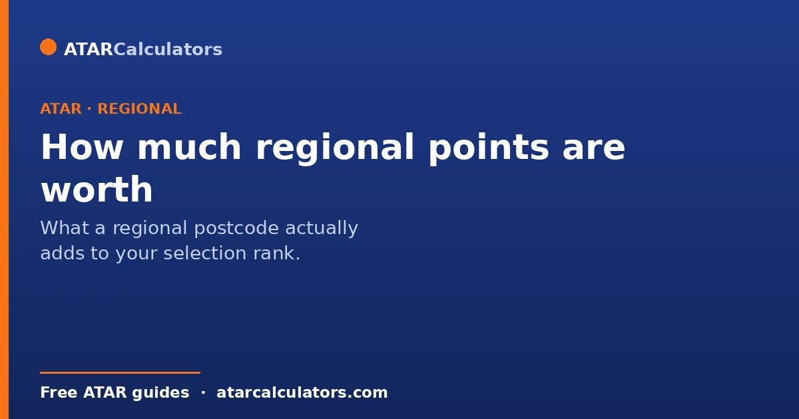
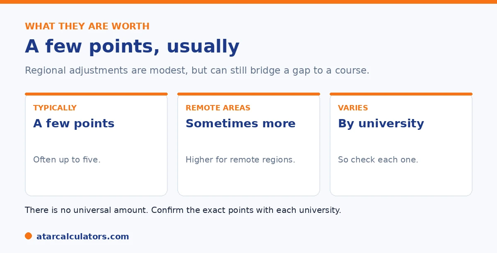

Here is the short version. Regional bonus points are usually worth a few points, often up to around five, though this varies. Some universities award more for remote areas than for regional ones. There is no universal figure, because each university sets its own amounts, and they can differ by course. So treat any specific number as a guide, and confirm with the university you are applying to.
Once you know you qualify for regional points, the next question is how much they are worth. The honest answer is that it varies, but there are typical ranges.
Below is what to expect, and why there is no single figure. To estimate your selection rank, use our regional points calculator.
Key takeaways
- Regional points are usually worth a few points.
- Often this is up to around five, though it varies.
- Remote areas sometimes attract more than regional ones.
- There is no universal figure; each university differs.
- Amounts can also differ by course.
- Confirm the exact points with each university.
What is typical
Regional points are usually modest. As a guide, they are often worth a few points, in many cases up to around five. That is not enough to transform a result, but it can be enough to bridge a small gap to a course.

So treat regional points as a helpful boost, not a game-changer. Combined with other adjustments, though, they can add up to something more meaningful.
More for remote areas
The amount can depend on how far from a city you are. Some universities award more points for remote areas than for regional ones, recognising the greater barriers students there can face.
So two students, both regional, might get different amounts depending on exactly where they live. Check how each university classifies your area.
Why there is no single figure
There is no universal number for regional points, because each university sets its own. One university might award a few points, another a different amount, and some vary it by course.
So any specific figure you see online is only a guide. The reliable number is the one on the specific university's adjustment page. See our regional points guide.
Want to estimate your selection rank?
Try the regional points calculator →Putting the points in context
It helps to keep regional points in perspective. On their own, a few points rarely decide a competitive course. But they matter most when you are close to a cut-off, where every point counts.
They also add to other adjustments you qualify for. So the real value is often in the total, not the regional points alone. See our guide on the maximum bonus points.
A worked scenario shows where regional points actually change outcomes. Suppose a course has a cut-off around 80 and you have an ATAR of 78. On its own, that ATAR misses. Add three regional points and your selection rank becomes 81, which now clears the cut-off. So the points made the difference between an offer and a rejection. That is the situation where regional adjustments are decisive. Near a threshold, where a small lift crosses the line. At the other extreme, if you are aiming at a course with a cut-off of 99 and sit at 85, three regional points do nothing useful. This is because the gap is far larger than any adjustment can bridge. And near the very top, the 99.95 cap means a student already on 98 gains little. This is because their rank cannot climb much further. The honest way to read regional points, then, is as a boost that matters most in the middle of the range and close to a cut-off. Combine them with any subject or equity adjustments you qualify for. Look at your total selection rank, rather than the regional points in isolation. Then judge that total against the specific cut-offs of the courses you want.
How many points to expect
Regional bonus points are typically worth around 3 to 5 points added to your selection rank, though the exact number depends on the university and how remote your postcode is. More remote areas may attract more points under some schemes.
So expect a few points rather than a large jump. Even so, a few points can matter a great deal near a cutoff, which is where regional adjustments often make the difference. Treat any figure as indicative and check the specific scheme.
It lifts your selection rank, not your ATAR
Like all adjustments, regional bonus points do not change your ATAR. They are added to your ATAR to form your selection rank for a specific course, and it is that selection rank the university compares to the cutoff.
So your ATAR stays the same, and your regional points lift your effective entry position for eligible courses. See selection rank vs ATAR for how this works.
Can a regional postcode get me to the cutoff?
Sometimes, yes. On their own, regional points can lift a borderline selection rank across a cutoff, turning a near miss into an offer. Combined with subject or equity adjustments, up to the cap, they can help even more.
So if your ATAR is a little below a course cutoff, regional points may bridge the gap. Whether they are enough depends on the size of the gap and the points available, so estimate your adjusted rank for the specific course.
Does the regional bonus differ by university?
Yes. The points on offer, the eligible postcodes, and the residency rules all vary between universities and admissions centres. So the same regional address can yield different adjustments at different universities.
So do not assume a fixed regional bonus everywhere. Check each target university’s scheme, since the value of being regional depends on the specific university and course.
Estimating your adjusted rank
To see what regional points mean for you, add your likely regional adjustment to your ATAR or predicted ATAR, and compare the result to the cutoffs for courses you want. That adjusted figure is your selection rank, the number the university actually uses.
So rather than wonder whether the points are enough, estimate your adjusted rank for each course. A regional bonus points calculator makes this quick, so you can see where a regional postcode leaves you against each cutoff.
Common questions
How much are regional bonus points worth?
Usually a few points, often up to around five, though it varies. Some universities award more for remote areas. There is no universal figure, since each university sets its own amounts, which can also differ by course.
How many points does a regional postcode add?
It depends on the university and how it classifies your area. Many award up to around five points, with more sometimes available for remote areas. Check the specific university for the exact amount.
Do regional bonus points vary by university?
Yes. Each university sets its own amounts and designated regions, and some vary the points by course. So there is no single figure, and any number you see online should be treated as a guide.
Do remote areas get more points than regional ones?
At some universities, yes. They award more for remote areas than for regional ones, recognising the greater barriers. So two regional students might get different amounts depending on exactly where they live.
Are a few regional points enough to get in?
On their own, rarely for a competitive course, but they matter most when you are close to a cut-off. They also add to other adjustments you qualify for, so the real value is often in the combined total.
Estimate your selection rank
See how regional points could change your selection rank. Free, and no signup.
Open the regional points calculator →Related guides
This guide is general information for students and parents, not formal admissions advice. Adjustment factors, schemes, caps and course cut-offs are set by each university and can change every year. They differ from one institution to another, and from course to course within the same institution. Always confirm the current details with the specific university and your state admissions centre (UAC, VTAC, QTAC, SATAC or TISC). A useful starting point is UAC's guide to selection rank adjustments. Reviewed by the ATARCalculators Editorial Team.